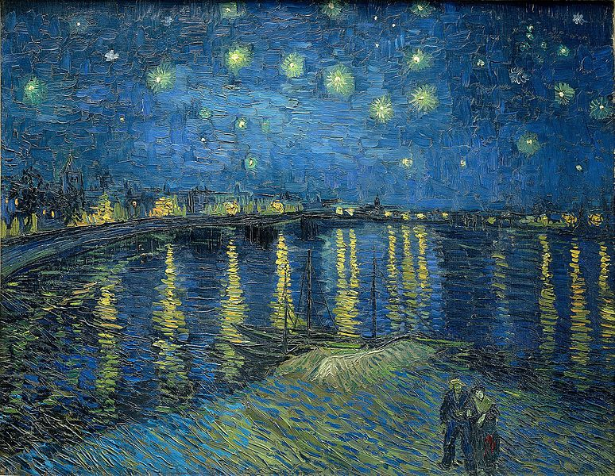
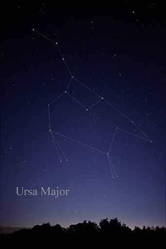

Amazingly, the constellation has been identified as a bear (specifically,
a female
bear) as far back as 13,000 years ago. This could be due to
a common oral tradition
that we all share as people.
Regardless, this
is probably the first constellation you ever picked out.
As the artist once saw it:
If you've never seen the whole thing:
